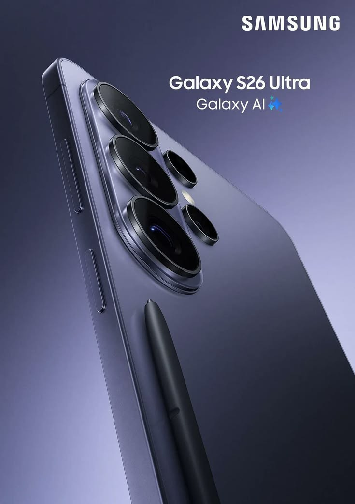

Galaxy AI
Fitur kecerdasan buatan Samsung untuk membantu terjemahan, catatan, dan pencarian. Fitur dan bahasa yang didukung berbeda per model dan wilayah.
Tidak semua fitur ada di semua model. Cek tabel spesifikasi resmi sebelum membeli.
Fitur kecerdasan buatan Samsung untuk membantu terjemahan, catatan, dan pencarian. Fitur dan bahasa yang didukung berbeda per model dan wilayah.
Layar yang terang dan tajam membuat foto, video, dan gim terlihat hidup. Ukuran dan fitur layar berbeda di tiap model.
Deretan lensa untuk foto jarak jauh, malam hari, dan video. Jumlah dan spesifikasi kamera berbeda per model.
Daya tahan baterai berbeda tiap model dan berubah sesuai pemakaian. Cek angka resmi di halaman produk Samsung.
Seri Z (Fold dan Flip) menghadirkan layar besar yang bisa dilipat menjadi ringkas saat dibawa.

Perhatikan deretan lensa, tombol samping, dan bingkai bodi. Detail kecil inilah yang menentukan kenyamanan sehari-hari.
Anda memberi perintah lewat teks, suara, atau sentuhan di layar.
Model AI menganalisis permintaan di perangkat atau lewat cloud, tergantung fitur.
Hasilnya muncul sebagai terjemahan, ringkasan, atau hasil pencarian di layar.
| Model | 5G | Galaxy AI |
|---|---|---|
| Galaxy S26 Ultra | Ya | Ya |
| Galaxy S26 | Ya | Ya |
| Galaxy Z Fold8 / Flip8 | Ya | Ya |
| Galaxy S25 Ultra | Ya | Ya |
| Galaxy S24 | Ya | Ya |
Baterai, kamera, dan fitur lain tidak kami cantumkan karena perlu verifikasi dari situs resmi.
Casing dan pelindung layar menjaga bodi dari goresan dan benturan.
Cek pembaruan One UI di pengaturan untuk model Anda.
Hindari panas berlebih dan isi daya sebelum benar-benar habis.
Tidak. Ketersediaan fitur berbeda per model dan wilayah.
Pemakaian fitur tertentu bisa memengaruhi daya tahan. Lihat angka resmi per model.